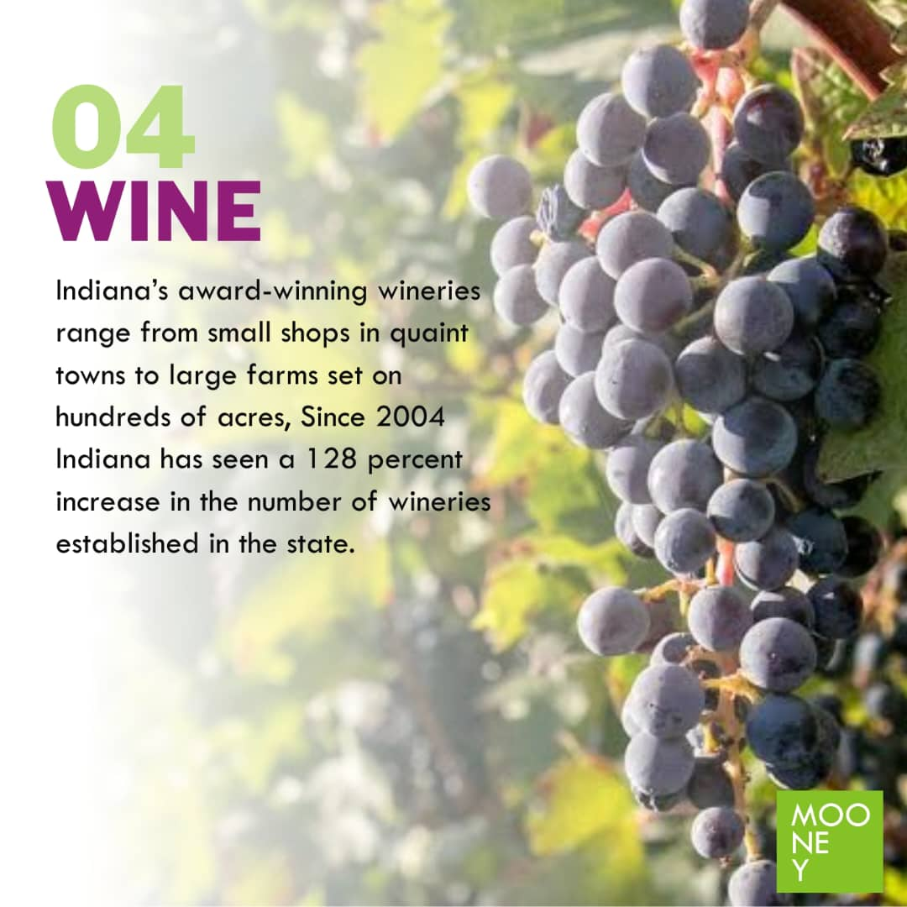
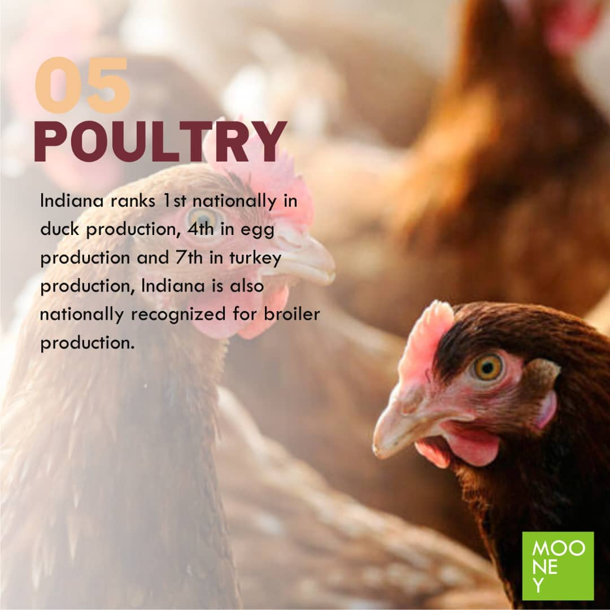
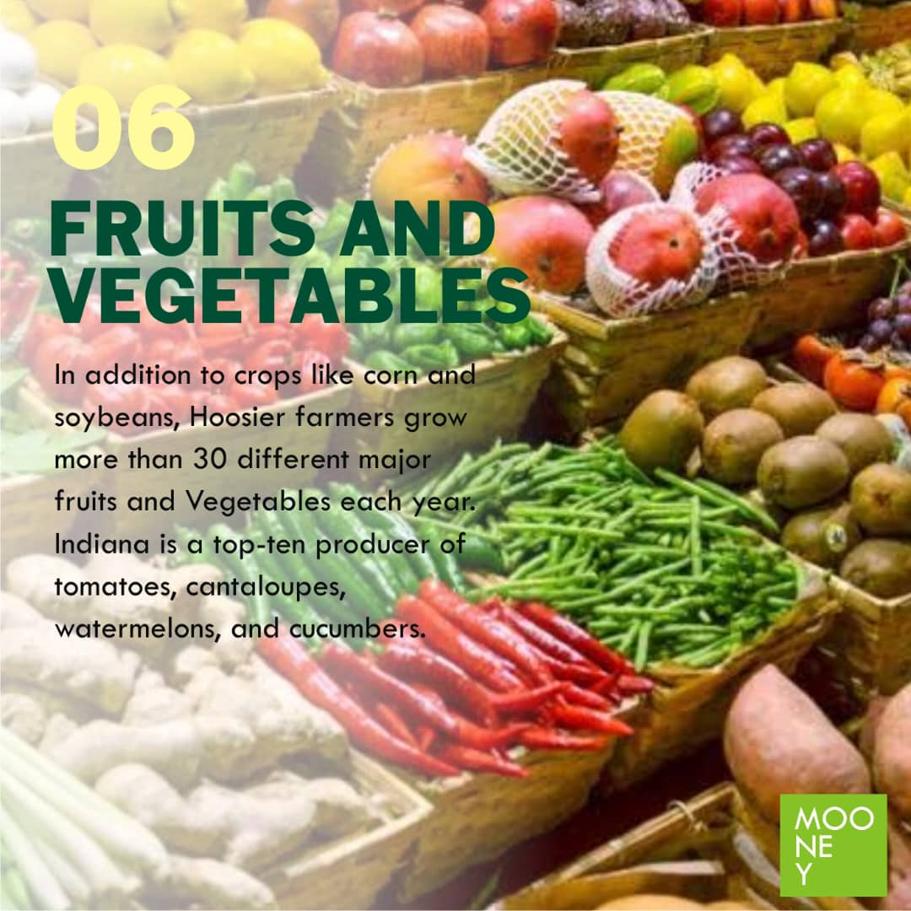
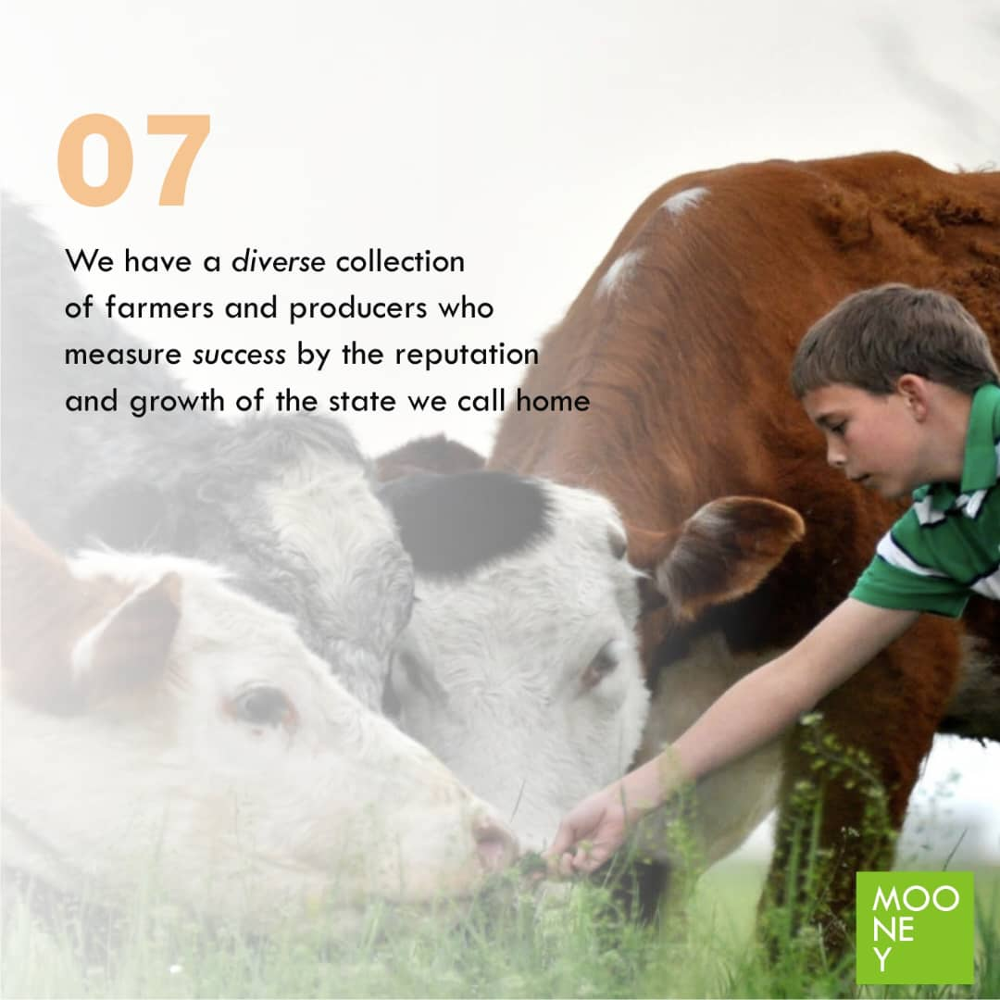
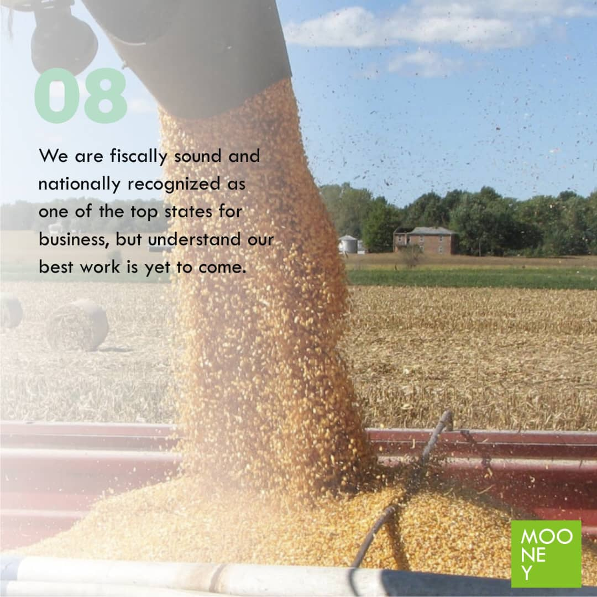
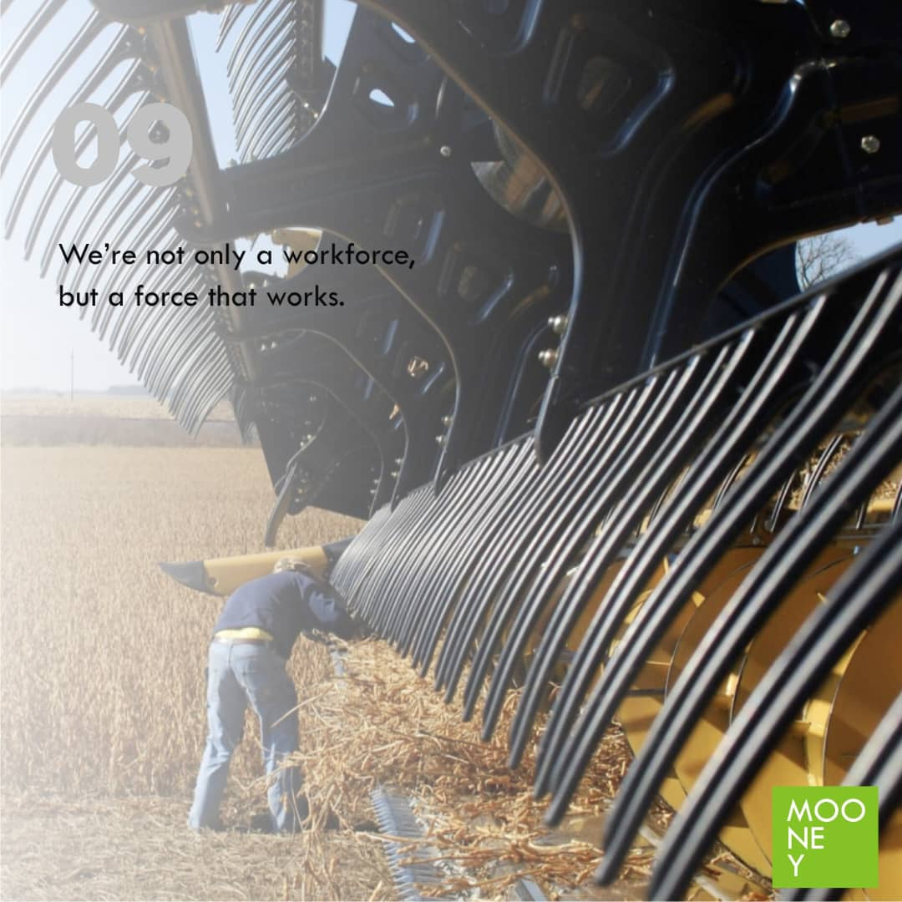
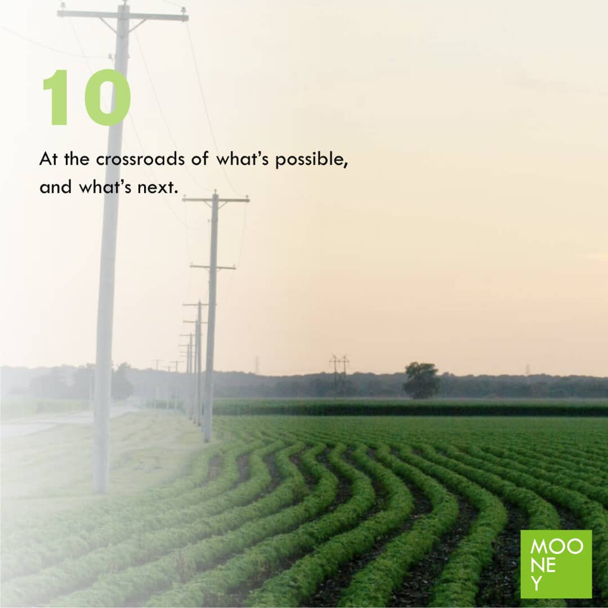

Agricultural Operations
Images from practical farm and supply activities.
Inside Mooney Agrifarm
Explore moments from our agricultural work, products, livestock, farm activities, supply operations, and continued development.


Images from practical farm and supply activities.
Selected agricultural products and seasonal harvests.
Moments reflecting responsible agricultural care.
Progress as our operations and capabilities grow.
Photo collection
Each photograph offers a closer view of the work, products, activities, and agricultural environment behind our company.








Work with Mooney Agrifarm
Contact our team with the product, quantity, timing, location, or agricultural opportunity you would like us to review.